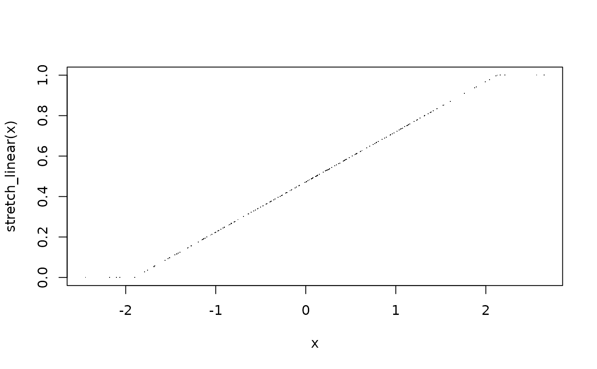
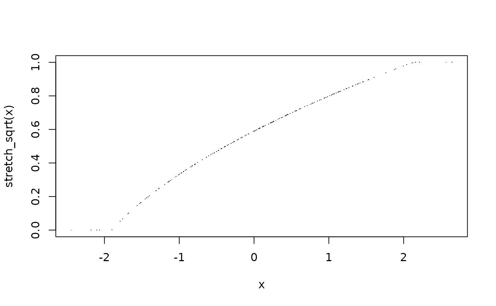
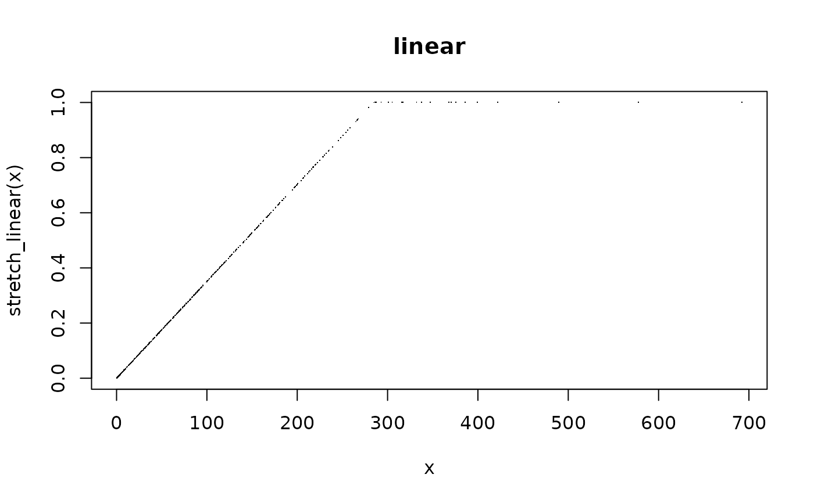
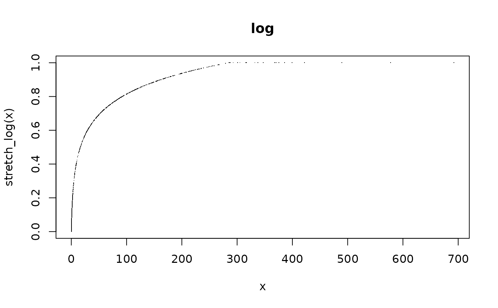
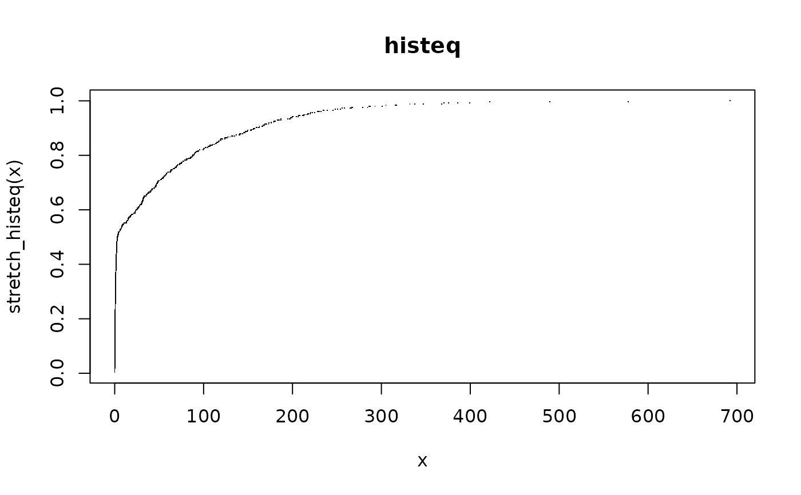
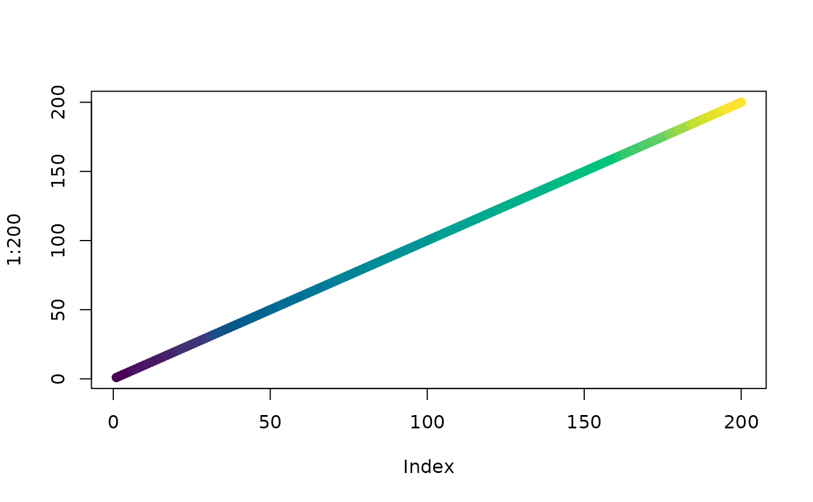

A family of contrast-stretch functions that rescale numeric vectors, matrices, or arrays to the unit interval. These are the data-normalization step that naturally precedes colour mapping with [d_pal()], [image_pal()], or [image_hex()]. Dimensions of the input are preserved, so a stretched matrix can go straight to an image plot.
Usage
stretch_linear(x, low = 0.02, high = 0.98, lim = NULL)
stretch_log(x, low = 0.02, high = 0.98, offset = NULL, lim = NULL)
stretch_sqrt(x, low = 0.02, high = 0.98, offset = NULL, lim = NULL)
stretch_histeq(x, n = 256)Arguments
- x
numeric vector, matrix, or array (NA values are preserved)
- low, high
quantile probabilities for the clip bounds (default 2nd and 98th percentiles), ignored if 'lim' is set
- lim
optional absolute clip bounds in data units, a range like 'c(0, 3000)' (for `stretch_log()` and `stretch_sqrt()` this is given on the original data scale and transformed internally)
- offset
numeric offset added before the log or sqrt transform. If `NULL` (default), auto-detected so that all values are non-negative.
- n
number of bins for histogram equalisation (default 256)
Value
numeric vector, matrix, or array matching the input, with values in [0, 1] (NA where input was not finite)
Details
`stretch_linear()` clips to quantile bounds then linearly rescales, this is the workhorse default.
`stretch_log()` applies `log1p` after shifting values to be non-negative, then linearly rescales. Useful for data with high dynamic range (e.g. overview-resolution satellite imagery where integer counts span several orders of magnitude).
`stretch_sqrt()` applies square-root after shifting, gentler compression than log, a good middle ground.
`stretch_histeq()` maps values to their empirical quantile rank, producing an approximately uniform distribution. Good for scenes with detail in both deep shadow and bright areas simultaneously.
By default the clip bounds are quantiles of the data itself, so the result is scene-dependent. Use 'lim' to give absolute bounds in data units instead (for example 'lim = c(0, 3000)' for Sentinel-2 surface reflectance), which fixes the mapping so that it is stable across tiles and timesteps (no seams in mosaics, no flicker in animations). When 'lim' is set the quantile arguments are ignored.
Values that stretch outside [0, 1] are clamped. Non-finite input values (NA, NaN) are returned as NA; constant input maps to 0.5.
For multi-band data (e.g. RGB), apply per-band for maximum per-channel contrast, or pool all bands into one vector for a joint stretch that preserves inter-band luminance relationships.
References
worked examples here sentinel2_stretch
Examples
x <- sort(rnorm(200))
plot(x, stretch_linear(x), pch = ".")

plot(x, stretch_sqrt(x), pch = ".")

## high dynamic range data benefits from log stretch
x <- c(rexp(500, 0.01), rexp(500, 1))
plot(x, stretch_linear(x), pch = ".", main = "linear")

plot(x, stretch_log(x), pch = ".", main = "log")

## histogram equalisation
plot(x, stretch_histeq(x), pch = ".", main = "histeq")

## absolute bounds, stable across scenes
stretch_linear(c(-100, 0, 1500, 3000, 9000), lim = c(0, 3000))
#> [1] 0.0 0.0 0.5 1.0 1.0
## feed into colour mapping
plot(1:200, col = d_pal(stretch_linear(sort(rnorm(200)))), pch = 19)
